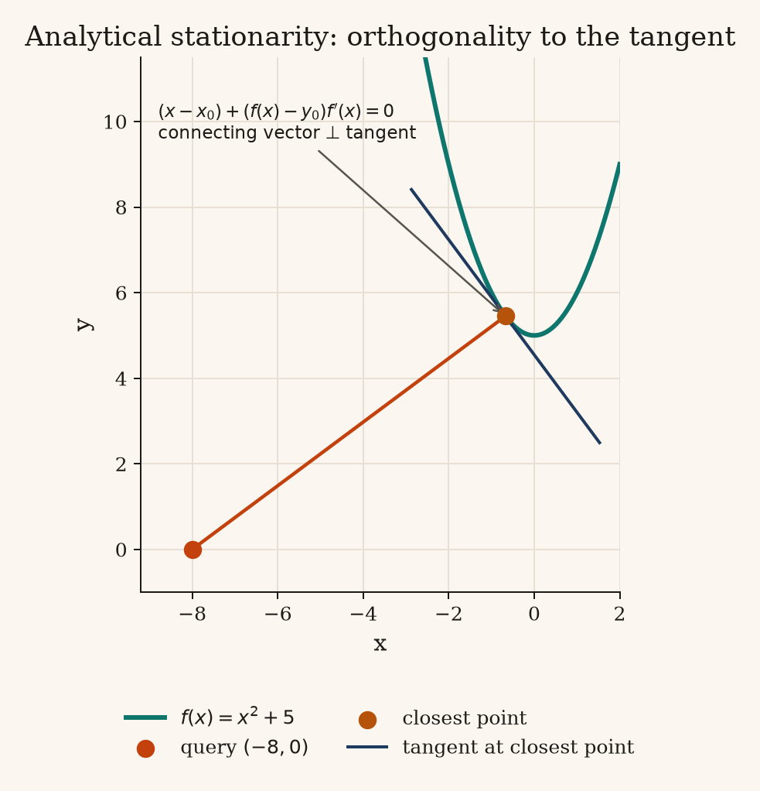
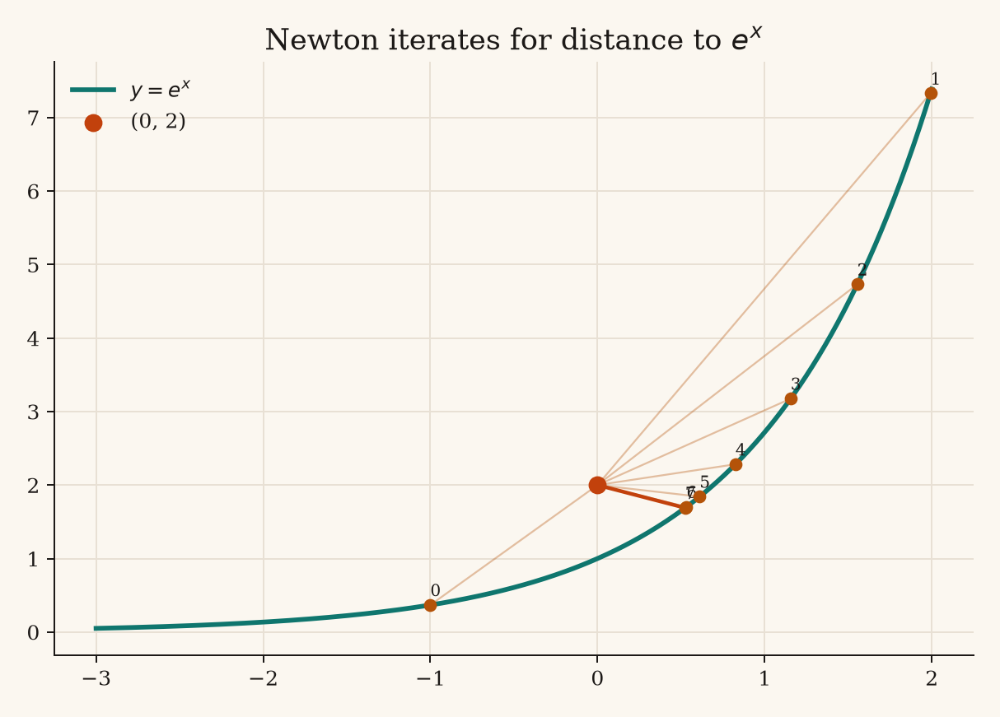
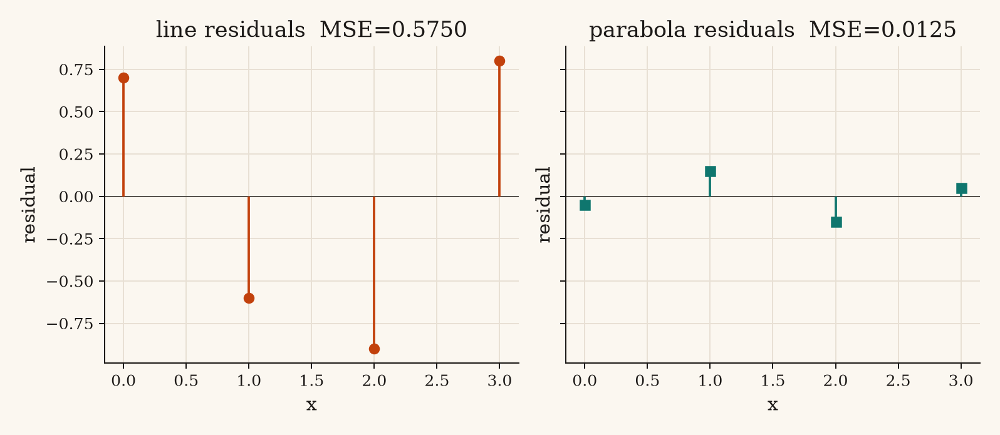

Part one · shortest distance to a function
The objective
Given a point \((x_0,y_0)\) and a differentiable curve \(y=f(x)\), the Euclidean distance to a point \((x,f(x))\) on the curve is
\[ d(x)=\sqrt{(x-x_0)^2+(f(x)-y_0)^2}. \]The square root is strictly increasing, so the minimizer of \(d\) is the same as the minimizer of the squared distance
\[ D(x)=(x-x_0)^2+(f(x)-y_0)^2. \]Since the square root is increasing, minimizing \(D\) gives the same closest point as minimizing \(d\). Once \(x^\star\) is found, compute the distance as \(\sqrt{D(x^\star)}\).

Analytical solution
At a minimum, \(D'(x)=0\). This gives the condition that the segment to the curve is perpendicular to its tangent.
\[ D'(x)=2(x-x_0)+2\bigl(f(x)-y_0\bigr)f'(x)=0 \quad\Longleftrightarrow\quad (x-x_0)+\bigl(f(x)-y_0\bigr)f'(x)=0. \]For \(f(x)=x^2+5\) we have \(f'(x)=2x\). With \(y_0=0\) this collapses to a depressed cubic
\[ 2x^3 + 11x - x_0 = 0 \qquad\text{i.e.}\qquad x^3 + \tfrac{11}{2}x - \tfrac{x_0}{2}=0. \]The cubic is strictly increasing because \(6x^2+11>0\), so it has one real root. Also, \(D''(x)=12x^2+22>0\), confirming this root is a minimum. Solving the cubic with a graphing calculator gives the following values for each query’s \(x_0\):
\[ \begin{array}{c|ccccc} x_0 & 0 & -4 & -8 & 2 & 6 \\ x^\star & 0.000000 & -0.355470 & -0.672078 & 0.180745 & 0.519904 \end{array} \]Worked solution for the first point, \((0,0)\).
- For query \((x_0,y_0)=(0,0)\), the stationarity equation is \(2x^3+11x-x_0=0\).
- Substitute \(x_0=0\): \(2x^3+11x=0\).
- Enter \(g(x)=2x^3+11x\) in a graphing calculator. Its real x-intercept is \(x=0\).
- Factor the equation: \(2x^3+11x=x(2x^2+11)=0\).
- Since \(2x^2+11>0\) for every real \(x\), zero is the only real root. Thus, \(x^\star=0\).
- Evaluate the curve at this x-coordinate: \(y^\star=f(0)=0^2+5=5\). The closest point is \((0,5)\).
- Compute the distance: \(d=\sqrt{(0-0)^2+(5-0)^2}=5\).
Applying the same root calculation to each query gives:

| Point | Analytic \(x^\star\) | Closest \((x,f(x))\) | Distance \(d\) |
|---|---|---|---|
| (0, 0) | 0.000000 | (0.000, 5.000) | 5.000000 |
| (−4, 0) | −0.355470 | (−0.355, 5.126) | 6.289845 |
| (−8, 0) | −0.672078 | (−0.672, 5.452) | 9.133420 |
| (2, 0) | 0.180745 | (0.181, 5.033) | 5.351396 |
| (6, 0) | 0.519904 | (0.520, 5.270) | 7.603125 |
Newton–Raphson on \(D'(x)=0\)
When \(f\), \(f'\), and \(f''\) are available, Newton finds a root of \(D'\) using:
\[ x_{k+1}=x_k-\frac{D'(x_k)}{D''(x_k)}, \] \[ D'(x)=2(x-x_0)+2(f(x)-y_0)f'(x), \] \[ D''(x)=2+2\bigl(f'(x)\bigr)^2+2(f(x)-y_0)f''(x). \]Worked solution for the first point, \((0,0)\).
In the iteration below, \(x_0\) denotes Newton's initial guess for the closest point's x-coordinate, not the query point's x-coordinate.
- Set the query point to \(p=(0,0)\).
- Choose the initial guess \(x_0=0\) for the closest point's x-coordinate.
- For this query and the curve \(f(x)=x^2+5\), the derivatives of the squared-distance objective are \(D'(x)=4x^3+22x\) and \(D''(x)=12x^2+22\).
- Evaluate them at the initial guess: \(D'(x_0)=D'(0)=0\) and \(D''(x_0)=D''(0)=22\).
- Apply Newton's update: \(x_1=x_0-\frac{D'(x_0)}{D''(x_0)}=0-\frac{0}{22}=0\).
- Since the update did not change the estimate, the method has converged immediately.
- Evaluate the curve: \(y^\star=f(0)=0^2+5=5\), so the closest point is \((0,5)\).
- Compute the distance: \(d=\sqrt{(0-0)^2+(5-0)^2}=5\).
For the remaining points, the initial guess is half the query’s x-coordinate. Iteration stops when consecutive estimates differ by less than \(10^{-12}\).
| Point | Initial guess | Closest point on curve | Distance | Iterations |
|---|---|---|---|---|
| (0, 0) | 0.000000 | (0.000000, 5.000000) | 5.000000 | 0 |
| (−4, 0) | −2.000000 | (−0.355470, 5.126359) | 6.289845 | 5 |
| (−8, 0) | −4.000000 | (−0.672078, 5.451690) | 9.133420 | 7 |
| (2, 0) | 1.000000 | (0.180745, 5.032669) | 5.351396 | 4 |
| (6, 0) | 3.000000 | (0.519904, 5.270300) | 7.603125 | 6 |


Golden-section search
Golden-section search minimizes \(D(x)\) on a bracket containing its minimum. It places two probes using the golden ratio \(\varphi=\frac{1+\sqrt{5}}{2}\), reuses one function value per step, and reduces the interval by a factor of \(\frac{1}{\varphi}\). We use \([x_0-15,x_0+15]\); \(D\) is unimodal on these intervals.
At each iteration, compare the squared distances at the ordered probes \(u<v\):
- If \(D(u)<D(v)\), keep the left interval \([a,v]\) and set \(b=v\).
- If \(D(u)>D(v)\), keep the right interval \([u,b]\) and set \(a=u\).
- If the values are equal, this implementation breaks the tie by keeping the right interval \([u,b]\) and setting \(a=u\).
Worked solution for the first point, \((0,0)\).
- Choose the bracket \([a,b]=[-15,15]\) and set \(r=2-\varphi\approx0.381966\).
- Place the interior probes at \(u=a+r(b-a)=-3.540738\) and \(v=b-r(b-a)=3.540738\).
- Evaluate the squared distance at both probes: \(D(u)=u^2+(u^2+5)^2\) and \(D(v)=v^2+(v^2+5)^2\).
- Here \(u=-v\), so symmetry gives \(D(u)=D(v)\). The minimum at \(x=0\) remains in \([u,b]\); the tie rule keeps this right interval by setting \(a=u\).
- Repeat the comparison using the rules above, discard the excluded interval, and reuse the retained probe when placing the next one.
- Stop when the bracket width is below \(10^{-12}\), then estimate the minimizing x-coordinate by its midpoint, \(x^\star\approx\frac{a+b}{2}=0\).
- Evaluate the curve at \(x^\star=0\): the closest point is \((0,f(0))=(0,5)\).
- Its distance from \((0,0)\) is \(d=\sqrt{(0-0)^2+(5-0)^2}=5\).

Results for all query points use the brackets listed below.
| Point | Bracket | Closest point on curve | Distance | Iterations |
|---|---|---|---|---|
| (0, 0) | [−15, 15] | (0.000000, 5.000000) | 5.000000 | 65 |
| (−4, 0) | [−19, 11] | (−0.355470, 5.126359) | 6.289845 | 65 |
| (−8, 0) | [−23, 7] | (−0.672078, 5.451690) | 9.133420 | 65 |
| (2, 0) | [−13, 17] | (0.180745, 5.032669) | 5.351396 | 65 |
| (6, 0) | [−9, 21] | (0.519904, 5.270300) | 7.603125 | 65 |
Comparing the three methods
For these query points, all three methods find the same closest points to at least eight digits. They differ in what information they need and how they find the minimum:
| Method | What it does | What it needs | Behavior here |
|---|---|---|---|
| Analytical | Solves \(D'(x)=0\) for the closest x-coordinate. | An equation that can be solved for its roots. | A graphing calculator finds the single real root of the cubic for each query. |
| Newton–Raphson | Uses derivative-based updates to find a root of \(D'(x)\). | \(f\), \(f'\), \(f''\), and a starting estimate. | Converges in 4–7 updates for the nonzero query x-coordinates; the starting estimate affects convergence. |
| Golden-section search | Compares two probes and repeatedly narrows an interval around the minimum of \(D(x)\). | \(f\) and an interval containing one minimum. | Uses no derivatives; takes 65 updates here to reach tolerance \(10^{-12}\). |
Any parabola
The helper accepts \(a,b,c\) for \(y=ax^2+bx+c\), then builds \(f(x)=ax^2+bx+c\), \(f'(x)=2ax+b\), and \(f''(x)=2a\). Newton uses these functions with a starting estimate; golden-section search uses the same \(f\) and a search interval. The optimization methods stay the same; only the curve parameters change.
The figure tests \(y=x^2\) from \((3,1)\), \(y=0.5x^2-x+2\) from \((-2,4)\), and \(y=-0.3x^2+4\) from \((1,-2)\). In each panel, the red point is the query, the gold point is Newton's closest point, and the dashed segment joins them. Newton starts at the query's x-coordinate; golden-section search uses \([-8,8]\). The displayed distance is Newton's result; golden-section search is also computed for comparison but is not plotted here.

Non-polynomial functions
The algorithms do not change; we supply a different function to each routine. Newton receives \(f\), its first two derivatives, and a starting estimate. Golden-section search receives \(f\) and an interval. Each plot shows the function, query point, closest point, and connecting segment. The table lists the inputs used and the resulting closest x-coordinate and distance.
For Newton, the derivative functions supplied were:
- \(e^x:\quad f'(x)=e^x,\quad f''(x)=e^x\)
- \(\ln x:\quad f'(x)=\frac{1}{x},\quad f''(x)=-\frac{1}{x^2}\)
- \(\frac{1}{x}:\quad f'(x)=-\frac{1}{x^2},\quad f''(x)=\frac{2}{x^3}\)
- \(\sqrt{x}:\quad f'(x)=\frac{1}{2\sqrt{x}},\quad f''(x)=-\frac{1}{4x^{\frac{3}{2}}}\)


| Curve | Point | Newton start | Golden interval | Closest \(x^\star\) | Newton \(d\) | Golden \(d\) |
|---|---|---|---|---|---|---|
| \(e^x\) | (0, 2) | −1 | [−3, 2] | 0.524480 | 0.609459 | 0.609459 |
| \(\ln x\) | (3, 0) | 2 | [0.2, 6] | 2.632315 | 1.035351 | 1.035351 |
| \(\frac{1}{x}\) | (2, 2) | 1.2 | [0.3, 4] | 1.000000 | 1.414214 | 1.414214 |
| \(\sqrt{x}\) | (2, 3) | 2.5 | [0.05, 6] | 2.456957 | 1.503648 | 1.503648 |
- Golden-section search: choose an interval that stays in the function's domain and contains one minimum. The intervals above meet both conditions.
- Newton–Raphson: the starting estimate affects which nearby stationary point it finds. If a curve has multiple minima, try several starts and compare the resulting distances.
Part two · fitting a line and a parabola
Fit a line \(y=mx+b\) and a parabola \(y=ax^2+bx+c\) to the four data points \((0,0.5),\ (1,1.5),\ (2,3.5),\ (3,7.5)\) by minimizing mean squared error (MSE):
\[ \mathrm{MSE}_{\text{line}}(m,b) = \frac{1}{n}\sum_{i=1}^{n}(y_i-mx_i-b)^2, \] \[ \mathrm{MSE}_{\text{parabola}}(a,b,c) = \frac{1}{n}\sum_{i=1}^{n}(y_i-ax_i^2-bx_i-c)^2. \]A residual error is the difference between an observed value and the model's prediction: \(r_i=y_i-\hat{y}_i\). MSE is the average of the squared residual errors, so it measures how far the fitted model's predictions are from the data.
The data points stay fixed while we adjust the model coefficients. For example, at \((2,3.5)\), the line predicts \(2m+b\), so its residual error is \(3.5-(2m+b)\). The coefficients \(m\) and \(b\) appear only to the first power. The parabola's residual error has the same form in its coefficients: \(y_i-(a x_i^2+b x_i+c)\), with each \(x_i\) fixed by the data.
MSE squares each residual error and averages the results. Squaring creates second-power and product terms such as \(m^2\), \(mb\), and \(b^2\), so MSE is a quadratic function of the coefficients. For these data, each quadratic curves upward in every parameter direction, like a bowl with one minimum. This strict convexity means setting the first derivatives to zero gives the unique global minimum, not just a possible local one.

Analytical line
These sums come from adding the coordinates of the four data points \((0,0.5),(1,1.5),(2,3.5),(3,7.5)\):
\[ \begin{aligned} \sum x_i &= 0+1+2+3=6,\\ \sum y_i &= 0.5+1.5+3.5+7.5=13,\\ \sum x_i^2 &= 0^2+1^2+2^2+3^2=14,\\ \sum x_i y_i &= 0(0.5)+1(1.5)+2(3.5)+3(7.5)=31. \end{aligned} \]At the best fit, a small change to either \(m\) or \(b\) should not reduce MSE. Since MSE is smooth, its slope in each parameter direction must be zero there. For the line MSE, the two partial derivatives are:
\[ \begin{aligned} \frac{\partial\mathrm{MSE}}{\partial m} &=-\frac{2}{4}\sum_{i=1}^{4}x_i(y_i-mx_i-b)=0,\\ \frac{\partial\mathrm{MSE}}{\partial b} &=-\frac{2}{4}\sum_{i=1}^{4}(y_i-mx_i-b)=0. \end{aligned} \]Rearranging these zero-gradient equations gives the normal equations. Substituting the sums above:
\[ \begin{aligned} m\sum x_i^2+b\sum x_i=\sum x_i y_i &\quad\Longrightarrow\quad 14m+6b=31,\\ m\sum x_i+4b=\sum y_i &\quad\Longrightarrow\quad 6m+4b=13. \end{aligned} \]- Using substitution and elimination on the two normal equations gives \(b=-0.2\) and \(m=2.3\), so the fitted line is \(y=2.3x-0.2\).
- For \(x=0,1,2,3\), the line predicts \(-0.2,2.1,4.4,6.7\). Subtracting these from the observed values gives residual errors \(0.7,-0.6,-0.9,0.8\).
- Square and add the residual errors: \(\mathrm{SSE}=0.7^2+(-0.6)^2+(-0.9)^2+0.8^2=2.3\).
- Divide SSE by the four data points: \(\mathrm{MSE}=\frac{2.3}{4}=0.575\).
Analytical parabola
Using the same four data points, the additional sums are:
\[ \begin{aligned} \sum x_i^3 &= 0^3+1^3+2^3+3^3=36,\\ \sum x_i^4 &= 0^4+1^4+2^4+3^4=98,\\ \sum x_i^2y_i &= 0^2(0.5)+1^2(1.5)+2^2(3.5)+3^2(7.5)=83. \end{aligned} \]Setting the partial derivatives of the parabola MSE to zero gives these normal equations:
\[ \begin{aligned} 98a+36b+14c &= 83,\\ 36a+14b+6c &= 31,\\ 14a+6b+4c &= 13. \end{aligned} \]- Using elimination on the three normal equations gives \(a=0.75\), \(b=0.05\), and \(c=0.55\), so the fitted parabola is \(y=0.75x^2+0.05x+0.55\).
- For \(x=0,1,2,3\), the model predicts \(0.55,1.35,3.65,7.45\). The residual errors are observed minus predicted: \(-0.05,0.15,-0.15,0.05\).
- Square and add the residual errors: \(\mathrm{SSE}=(-0.05)^2+0.15^2+(-0.15)^2+0.05^2=0.05\).
- Divide SSE by the four data points: \(\mathrm{MSE}=\frac{0.05}{4}=0.0125\).

Summary of Results
- For the line, the MSE is \(0.575\).
- For the best-fit line, the equation is \(y=2.3x-0.2\).
- For the parabola, the MSE is \(0.0125\).
- For the best-fit parabola, the equation is \(y=0.75x^2+0.05x+0.55\).
Coordinate-wise Newton–Raphson
Instead of updating all coefficients at once, coordinate-wise Newton updates one coefficient while holding the others fixed. For each coefficient \(\theta\), use the one-variable Newton update \(\theta\leftarrow\theta-\frac{\partial\mathrm{MSE}/\partial\theta}{\partial^2\mathrm{MSE}/\partial\theta^2}\), then move to the next coefficient and repeat the cycle.
Line fit: update \(m\), then \(b\). Let \(r_i=y_i-mx_i-b\) be each residual error. First hold \(b\) fixed and update the slope:
\[ \frac{\partial\mathrm{MSE}}{\partial m} = -\frac{2}{n}\sum x_i(y_i-mx_i-b), \qquad \frac{\partial^2\mathrm{MSE}}{\partial m^2} = \frac{2}{n}\sum x_i^2, \]Then hold the updated \(m\) fixed and update the intercept \(b\). Each one-variable MSE is quadratic, so its Newton step reaches the minimum along that coordinate exactly.
\[ \frac{\partial\mathrm{MSE}}{\partial b}=-\frac{2}{n}\sum r_i, \qquad \frac{\partial^2\mathrm{MSE}}{\partial b^2}=2. \]First cycle, starting from \((m,b)=(0,0)\).
- Use the data points \((0,0.5),(1,1.5),(2,3.5),(3,7.5)\), in this order. With \(m=b=0\), the line predicts zero at each x-value, so the residual errors are \((0.5,1.5,3.5,7.5)\).
- For the slope update, calculate the gradient: \(\frac{\partial\mathrm{MSE}}{\partial m}=-\frac{2}{4}[0(0.5)+1(1.5)+2(3.5)+3(7.5)]=-15.5\).
- The second derivative for the slope is \(\frac{\partial^2\mathrm{MSE}}{\partial m^2}=7\).
- Apply the Newton update: \(m=0-\frac{-15.5}{7}=2.214286\).
- With this slope update, MSE decreases to \(0.589286\).
- Keep the new slope fixed and recompute the residual errors: \((0.5,-0.714286,-0.928571,0.857143)\).
- For the intercept update, the gradient is \(\frac{\partial\mathrm{MSE}}{\partial b}=0.142857\).
- The second derivative for the intercept is \(\frac{\partial^2\mathrm{MSE}}{\partial b^2}=2\).
- Apply the Newton update: \(b=0-\frac{0.142857}{2}=-0.071429\).
- The completed cycle gives \((m,b)=(2.214286,-0.071429)\) and MSE \(0.584184\). The table shows later cycles.
| Step | Updated | \(m\) | \(b\) | MSE |
|---|---|---|---|---|
| 0 | — | 0.000000 | 0.000000 | 17.750000 |
| 1 | \(m\) | 2.214286 | 0.000000 | 0.589286 |
| 2 | \(b\) | 2.214286 | −0.071429 | 0.584184 |
| 3 | \(m\) | 2.244898 | −0.071429 | 0.580904 |
| 4 | \(b\) | 2.244898 | −0.117347 | 0.578795 |
| 12 | \(b\) | 2.290589 | −0.185884 | 0.575111 |
| ∞ | analytic | 2.300000 | −0.200000 | 0.575000 |


Parabola fit: update \(a\), then \(b\), then \(c\). For \(r_i=y_i-(ax_i^2+bx_i+c)\), the coordinate derivatives are:
\[ \begin{aligned} \frac{\partial\mathrm{MSE}}{\partial a}&=-\frac{2}{n}\sum x_i^2r_i,& \frac{\partial^2\mathrm{MSE}}{\partial a^2}&=\frac{2}{n}\sum x_i^4,\\ \frac{\partial\mathrm{MSE}}{\partial b}&=-\frac{2}{n}\sum x_ir_i,& \frac{\partial^2\mathrm{MSE}}{\partial b^2}&=\frac{2}{n}\sum x_i^2,\\ \frac{\partial\mathrm{MSE}}{\partial c}&=-\frac{2}{n}\sum r_i,& \frac{\partial^2\mathrm{MSE}}{\partial c^2}&=2. \end{aligned} \]First cycle, starting from \((a,b,c)=(0,0,0)\).
- Start at \((a,b,c)=(0,0,0)\). The initial MSE is \(17.75\).
- Hold \(b=c=0\). At this start, the residual errors equal the observed y-values, and \(\sum x_i^2r_i=83\).
- The gradient for \(a\) is \(\frac{\partial\mathrm{MSE}}{\partial a}=-\frac{2}{4}(83)=-41.5\).
- The second derivative for \(a\) is \(\frac{\partial^2\mathrm{MSE}}{\partial a^2}=\frac{2}{4}(98)=49\).
- Apply the Newton update: \(a=0-\frac{-41.5}{49}=0.846939\).
- MSE decreases to \(0.176020\).
- Keep \(a\) fixed and recompute the residual errors: \((0.5,0.653061,0.112245,-0.122449)\).
- Using these residual errors, the gradient for \(b\) is \(-0.255102\).
- The second derivative for \(b\) is \(\frac{2}{4}\sum x_i^2=7\).
- Apply the Newton update: \(b=0-\frac{-0.255102}{7}=0.036443\).
- MSE decreases to \(0.171372\).
- Keep \(a\) and \(b\) fixed, then recompute the residual errors: \((0.5,0.616618,0.039359,-0.231778)\).
- Using these residual errors, the gradient for \(c\) is approximately \(-0.462099\).
- The second derivative for \(c\) is \(2\).
- Apply the Newton update: \(c=0-\frac{-0.462099}{2}=0.231050\).
- The completed cycle gives MSE \(0.117988\).
- Repeat the cycle \(a\to b\to c\). The coefficients converge to \((0.75,0.05,0.55)\), the analytical solution, and MSE converges to \(0.0125\).


Code
The assignment code is organized by task:
- distance.py contains the squared-distance helper, Newton–Raphson and golden-section solvers, and a wrapper for parabolas. It also runs the assignment examples and non-polynomial smoke tests.
- fitting.py defines the data and MSE functions, solves the line and parabola fits analytically, and records coordinate-wise Newton updates.
- generate_figures.py runs the examples and creates the plots saved in the
mediafolder.